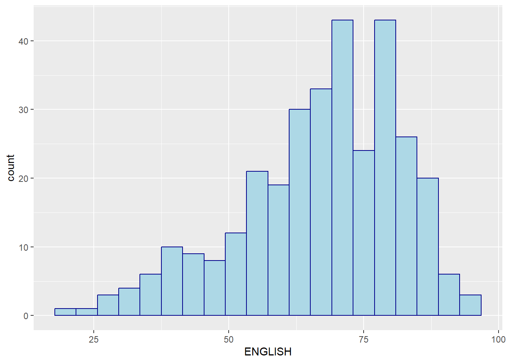
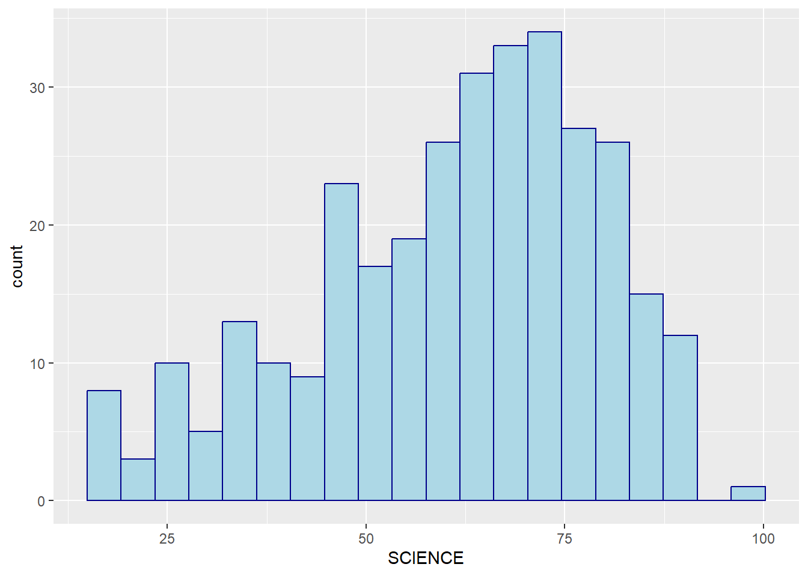
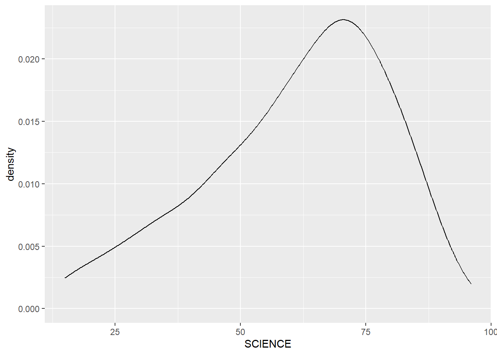
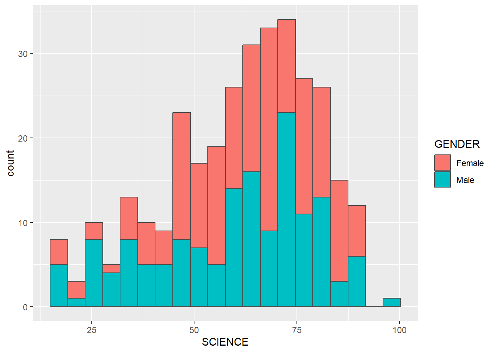
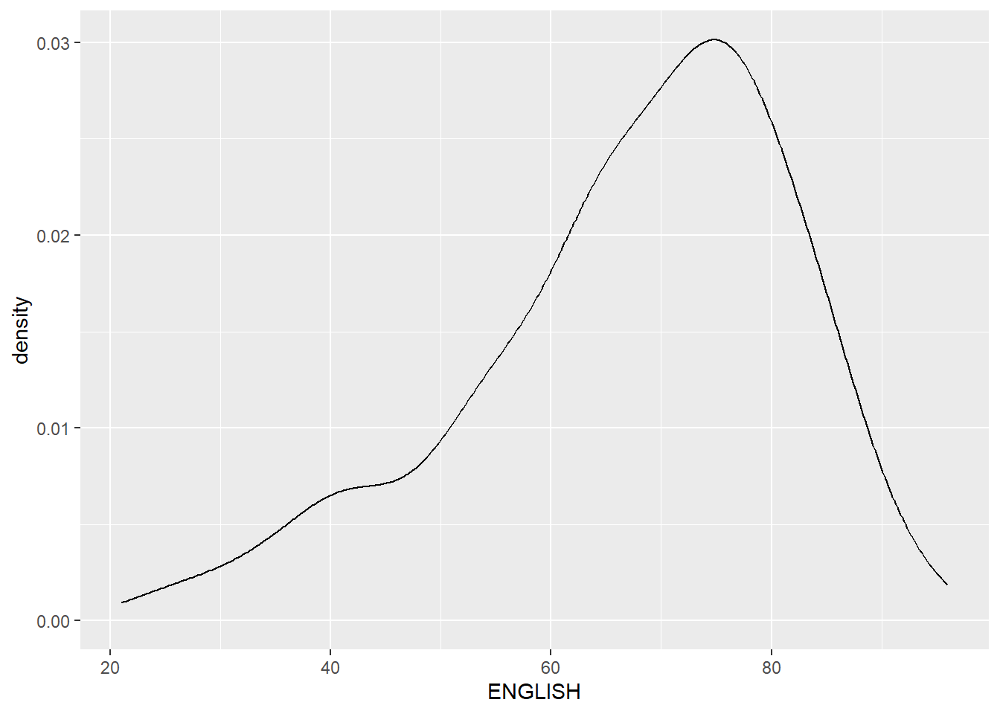
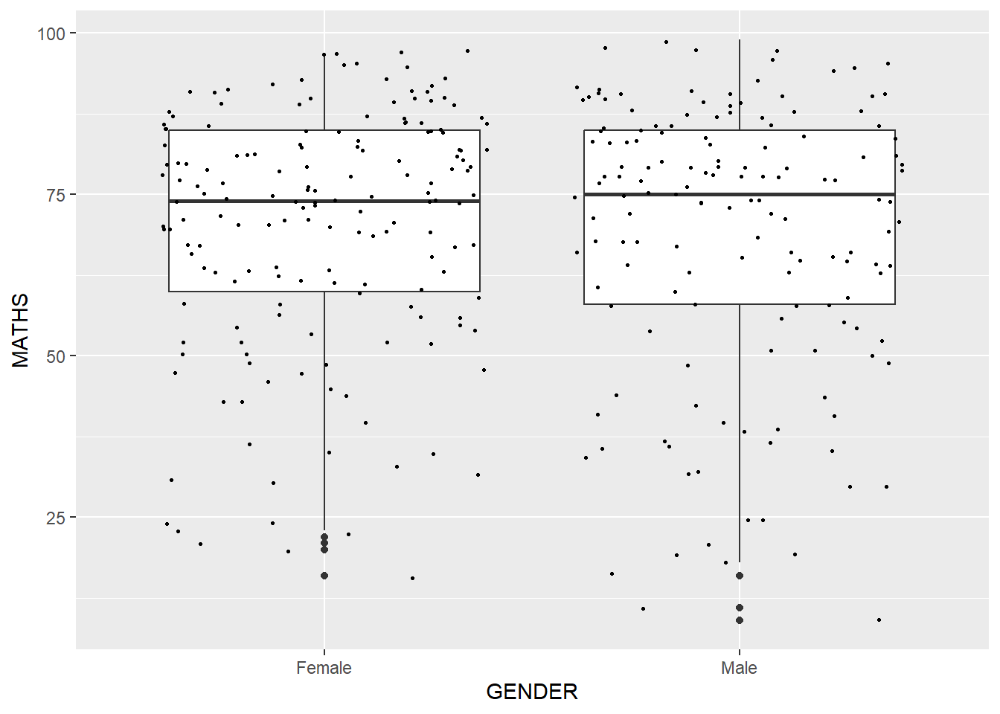
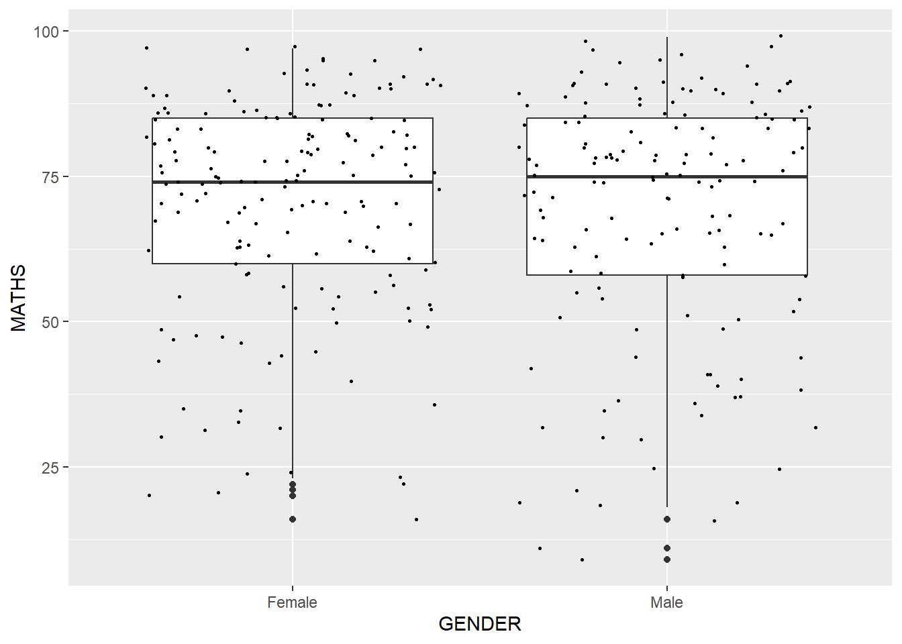
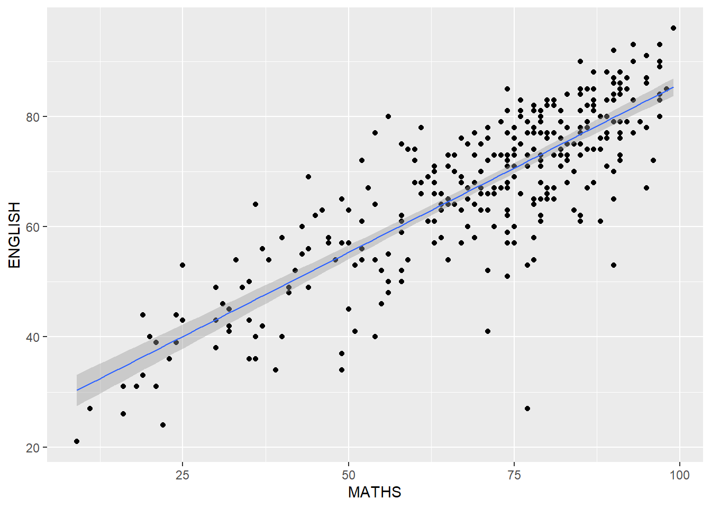
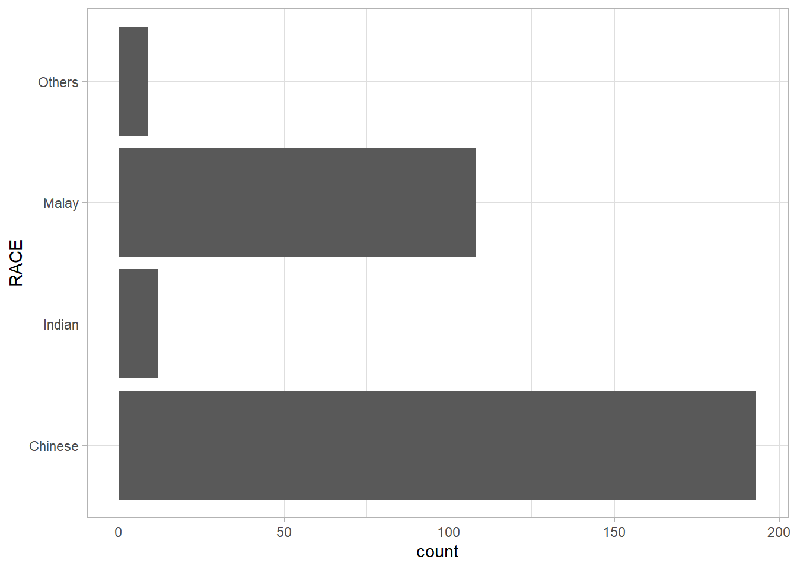
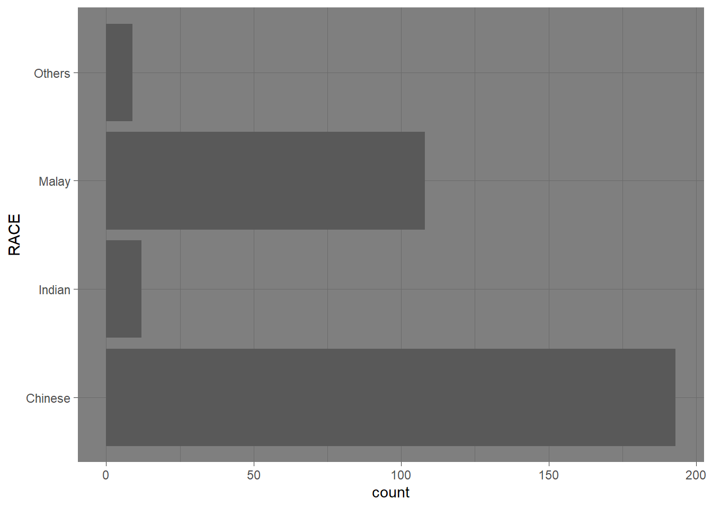

pacman::p_load(tidyverse)Hands-On Ex 1
Getting Started
This hands-on exercise is on A Layered Grammar of Graphics: ggplot2 methods.
Zhixuan’s personal learning outcomes
- Recap of ggplot 2 using R
- Understand and recap on the various statistical plots
- Link concepts learn to other modules/area of work
Please note that this hands on exercise will not be possible with the help from this link
Install and launching R packages
The code chunk below uses p_load() of pacman package to check if tidyverse packages are installed in the computer. If they are, then they will be launched into R.
Importing the data
exam_data <- read_csv("data/Exam_data.csv")Rows: 322 Columns: 7
── Column specification ────────────────────────────────────────────────────────
Delimiter: ","
chr (4): ID, CLASS, GENDER, RACE
dbl (3): ENGLISH, MATHS, SCIENCE
ℹ Use `spec()` to retrieve the full column specification for this data.
ℹ Specify the column types or set `show_col_types = FALSE` to quiet this message.Bar chart
The code chunk below plots a bar chart by using geom_bar(). This is from elearn video.
ggplot(data = exam_data, aes (x = RACE)) +
geom_bar()
R Graphics VS ggplot
It is important to know and compare between the base R and ggplot. In this way, I will learn to appreciate the features of ggplot:
hist(exam_data$MATHS)
ggplot(data=exam_data, aes(x = MATHS)) +
geom_histogram(bins=10,
boundary = 100,
color="black",
fill="grey") +
ggtitle("Distribution of Maths scores")
Note
Personal remarks:
ggplot seems to have a more beautiful layout and labeling. Comparing excel and maybe with python 😃
Essential Grammatical Elements in ggplot2: data
To read on sharing by Prof on Grammer of Graphics.
I will call a ggplot function using the code chunk below:
ggplot(data=exam_data)
Note
I note a blank page appears. From prof’s note:
ggplot()initializes a ggplot object.The data argument defines the dataset to be used for plotting.
If the dataset is not already a data.frame, it will be converted to one by
fortify().
Essential Grammatical Elements in ggplot2: Aesthetic mappings
Code chunk below adds the aesthetic element into the plot.
ggplot(data=exam_data,
aes(x= MATHS))
Note
ggplot includes the x-axis and the axis’s label.
Essential Grammatical Elements in ggplot2: geom
This is a recap of the concepts use in geospatial analytics for geom.
Geometric objects are the actual marks we put on a plot. Examples include:
geom_point for drawing individual points (e.g., a scatter plot)
geom_line for drawing lines (e.g., for a line charts)
geom_smooth for drawing smoothed lines (e.g., for simple trends or approximations)
geom_bar for drawing bars (e.g., for bar charts)
geom_histogram for drawing binned values (e.g. a histogram)
geom_polygon for drawing arbitrary shapes
geom_map for drawing polygons in the shape of a map! (You can access the data to use for these maps by using the map_data() function).
Geometric Objects: geom_bar
The code chunk below plots a bar chart by using geom_bar().
ggplot(data=exam_data,
aes(x=RACE)) +
geom_bar()
This is plotted in Bar chart
Geometric Objects: geom_dotplot
In the code chunk below, geom_dotplot() of ggplot2 is used to plot a dot plot.
ggplot(data=exam_data,
aes(x = MATHS)) +
geom_dotplot(dotsize = 0.5)Bin width defaults to 1/30 of the range of the data. Pick better value with
`binwidth`.
Note
Personal opinion is that it is not a good visualisation using dots. I would prefer bar chart. The plot above is more for reference for using geom_dotplot
The code chunk below performs the following two steps:
scale_y_continuous()is used to turn off the y-axis, andbinwidth argument is used to change the binwidth to 2.5.
ggplot(data=exam_data,
aes(x = MATHS)) +
geom_dotplot(binwidth=2.5,
dotsize = 0.5) +
scale_y_continuous(NULL,
breaks = NULL) 
Note
Again, my personal opinion is that this is not a good visualisation
Geometric Objects: geom_histogram()
In the code chunk below, geom_histogram() is used to create a simple histogram by using values in MATHS field of exam_data. Default bin is 30.
ggplot(data=exam_data,
aes(x = MATHS)) +
geom_histogram() `stat_bin()` using `bins = 30`. Pick better value with `binwidth`.
Modifying a geometric object by changing geom()
In the code chunk below,
bins argument is used to change the number of bins to 20,
fill argument is used to shade the histogram with light blue color, and
color argument is used to change the outline colour of the bars in black
ggplot(data=exam_data,
aes(x= MATHS)) +
geom_histogram(bins=20,
color="black",
fill="light blue") 
Note
This histogram seems to be visually appealing
I will proceed to try with the other subjects as well:
ggplot(data=exam_data,
aes(x= ENGLISH)) +
geom_histogram(bins=20,
color="darkblue",
fill="light blue")
ggplot(data=exam_data,
aes(x= SCIENCE)) +
geom_histogram(bins=20,
color="darkblue",
fill="light blue")
Modifying a geometric object by changing aes()
ggplot(data=exam_data,
aes(x= MATHS,
fill = GENDER)) +
geom_histogram(bins=20,
color="grey30")
I will proceed to try with the other subjects as well:
ggplot(data=exam_data,
aes(x= ENGLISH,
fill = GENDER)) +
geom_histogram(bins=20,
color="grey30")
ggplot(data=exam_data,
aes(x= SCIENCE,
fill = GENDER)) +
geom_histogram(bins=20,
color="grey30")
Geometric Objects: geom-density()
geom-density() computes and plots kernel density estimate, which is a smoothed version of the histogram.
The code below plots the distribution of Maths scores in a kernel density estimate plot.
ggplot(data=exam_data,
aes(x = MATHS)) +
geom_density() 
I decided to try with other subjects (Science and English) as well:
ggplot(data=exam_data,
aes(x = ENGLISH)) +
geom_density() 
ggplot(data=exam_data,
aes(x = SCIENCE)) +
geom_density() The code chunk below plots two kernel density lines by using colour or fill arguments of aes()
ggplot(data=exam_data,
aes(x = MATHS,
colour = GENDER)) +
geom_density()
ggplot(data=exam_data,
aes(x = ENGLISH,
colour = GENDER)) +
geom_density()
ggplot(data=exam_data,
aes(x = SCIENCE,
colour = GENDER)) +
geom_density()
Geometric Objects: geom_boxplot
geom_boxplot() displays continuous value list. It visualises five summary statistics (the median, two hinges and two whiskers), and all “outlying” points individually.
This is a boxplot.
The code chunk below plots boxplots by using geom_boxplot().
ggplot(data=exam_data,
aes(y = MATHS,
x= GENDER)) +
geom_boxplot() 
The code chunk below plots the distribution of Maths scores by gender in notched plot instead of boxplot.
ggplot(data=exam_data,
aes(y = MATHS,
x= GENDER)) +
geom_boxplot(notch=TRUE)
Note
Good to compare between different boxplots. However, it will be more meaningful to have the statistics summary
Geometric Objects: geom_violin
The code below plot the distribution of Maths score by gender in violin plot.
ggplot(data=exam_data,
aes(y = MATHS,
x= GENDER)) +
geom_violin()
Note
Not visually appealing to compare
Geometric Objects: geom_point()
The code chunk below plots a scatterplot showing the Maths and English grades of pupils by using geom_point().
ggplot(data=exam_data,
aes(x= MATHS,
y=ENGLISH)) +
geom_point() 
geom objects can be combined
The code chunk below plots the data points on the boxplots by using both geom_boxplot() and geom_point().
ggplot(data=exam_data,
aes(y = MATHS,
x= GENDER)) +
geom_boxplot() +
geom_point(position="jitter",
size = 0.5) 
Note
This is more for comparision
Essential Grammatical Elements in ggplot2: stat
Working with stat()
ggplot(data=exam_data,
aes(y = MATHS, x= GENDER)) +
geom_boxplot()
Working with stat - the stat_summary() method
The code chunk below adds mean values by using stat_summary() function and overriding the default geom.
ggplot(data=exam_data,
aes(y = MATHS, x= GENDER)) +
geom_boxplot() +
stat_summary(geom = "point",
fun.y="mean",
colour ="red",
size=4) Warning: The `fun.y` argument of `stat_summary()` is deprecated as of ggplot2 3.3.0.
ℹ Please use the `fun` argument instead.
Working with stat - the geom() method
ggplot(data=exam_data,
aes(y = MATHS, x= GENDER)) +
geom_boxplot() +
geom_point(stat="summary",
fun.y="mean",
colour ="red",
size=4) Warning in geom_point(stat = "summary", fun.y = "mean", colour = "red", :
Ignoring unknown parameters: `fun.y`No summary function supplied, defaulting to `mean_se()`
Adding a best fit curve on a scatterplot?
The scatterplot below shows the relationship of Maths and English grades of pupils. The interpretability of this graph can be improved by adding a best fit curve.
In the code chunk below, geom_smooth() is used to plot a best fit curve on the scatterplot. The default method used is loess.
ggplot(data=exam_data,
aes(x= MATHS, y=ENGLISH)) +
geom_point() +
geom_smooth(size=0.5)Warning: Using `size` aesthetic for lines was deprecated in ggplot2 3.4.0.
ℹ Please use `linewidth` instead.`geom_smooth()` using method = 'loess' and formula = 'y ~ x'
The default smoothing method can be overridden as shown below.
ggplot(data=exam_data,
aes(x= MATHS,
y=ENGLISH)) +
geom_point() +
geom_smooth(method=lm,
size=0.5)`geom_smooth()` using formula = 'y ~ x'
Note
Question to ask myself: Why do I need to draw a line to compare? Is the scatterplot sufficient?
Essential Grammatical Elements in ggplot2: Facets
Working with facet_wrap()
facet_wrap wraps a 1d sequence of panels into 2d. This is generally a better use of screen space than facet_grid because most displays are roughly rectangular.
The code chunk below plots a trellis plot using facet-wrap().
ggplot(data=exam_data,
aes(x= MATHS)) +
geom_histogram(bins=20) +
facet_wrap(~ CLASS)
Note
Good for comparison within a same group
facet_grid() function
facet_grid() forms a matrix of panels defined by row and column facetting variables. It is most useful when you have two discrete variables, and all combinations of the variables exist in the data.
The code chunk below plots a trellis plot using facet_grid().
ggplot(data=exam_data,
aes(x= MATHS)) +
geom_histogram(bins=20) +
facet_grid(~ CLASS)
Essential Grammatical Elements in ggplot2: Coordinates
Working with Coordinate
By the default, the Bar chart of ggplot2 is in vertical form.
ggplot(data=exam_data,
aes(x=RACE)) +
geom_bar()
The code chunk below flips the horizontal bar chart into vertical bar chart by using coord_flip().
ggplot(data=exam_data,
aes(x=RACE)) +
geom_bar() +
coord_flip()
Changing the y- and x-axis range
The scatterplot on the right is slightly misleading because the y-aixs and x-axis range are not equal.
ggplot(data=exam_data,
aes(x= MATHS, y=ENGLISH)) +
geom_point() +
geom_smooth(method=lm, size=0.5)`geom_smooth()` using formula = 'y ~ x'
The code chunk below fixed both the y-axis and x-axis range from 0-100.
ggplot(data=exam_data,
aes(x= MATHS, y=ENGLISH)) +
geom_point() +
geom_smooth(method=lm,
size=0.5) +
coord_cartesian(xlim=c(0,100),
ylim=c(0,100))`geom_smooth()` using formula = 'y ~ x'
Essential Grammatical Elements in ggplot2: themes
A list of theme can be found at this link. Each theme element can be conceived of as either a line (e.g. x-axis), a rectangle (e.g. graph background), or text (e.g. axis title).
Working with theme
The code chunk below plot a horizontal bar chart using theme_gray().
ggplot(data=exam_data,
aes(x=RACE)) +
geom_bar() +
coord_flip() +
theme_gray()
A horizontal bar chart plotted using theme_classic().
ggplot(data=exam_data,
aes(x=RACE)) +
geom_bar() +
coord_flip() +
theme_classic()
A horizontal bar chart plotted using theme_minimal().
ggplot(data=exam_data,
aes(x=RACE)) +
geom_bar() +
coord_flip() +
theme_minimal()
I will try with the other themes:
ggplot(data=exam_data,
aes(x=RACE)) +
geom_bar() +
coord_flip() +
theme_bw()
ggplot(data=exam_data,
aes(x=RACE)) +
geom_bar() +
coord_flip() +
theme_light()
ggplot(data=exam_data,
aes(x=RACE)) +
geom_bar() +
coord_flip() +
theme_dark()
Note
Theme_gray() seems to be the best
The next step will be to compare between the various plots - comparing between math, science and english grades.